The story of Canadian Graphic Artist, Marian Bantjes, is not all sunshine and rainbows, but inspirational and real life. With high’s and lows Bantjes has overcome these times to achieve a dream of prominence, with a ‘personal signature that shines through her work’.
The beginning of the journey was 1983, a year after dropping out of art school, named ‘Emily Carr College’ at the time. Bantjes was 20, and unemployed. The turning point was when she discovered a job advertisement for publishing company Hartley & Marks in a second-hand bookstore, while getting change for the bus. She was hired for photocopying and filing, later to be trained in paste-up and layout in the company’s sibling, ‘TypeWorks’, which seen Bantjes develop into a typesetter.
“...I have even considered, if my career falls apart, that I would love to work as a typesetter again for some really good designer.”
- Marian Bantjes (2013). Pretty Pictures
In 1993, after 10 years in the company, Bantjes found herself highly experienced in a trade that had become out-dated. Unable to find a job, she co-founded a design company with her friend called ‘Communication by Design’, which was re-named five years later to ‘Digitopolis’ after Bantjes confessing in a meeting she found the original name embarrassing. The first few years were fun, learning new things and experiencing successful growth of the business. However, there came a point where Bantjes began to question her role, being frustrated with having to design to clients’ demands rather than doing what she wanted. At this time she began to look at what other people were doing that had never been seen in society before, and this sparked a motivation to escape the world of Graphic Design which she had ‘became disillusioned with’.
“The business became a kind of machine... the work was no longer this adventure, it was just work that never ended. I started not to care...”
- Marian Bantjes (2013). Pretty Pictures
Marian describes this time as her ‘mid-life crisis’, realising that looking back on her life she had not created anything ‘important, memorable or influential’. To her joy in 2002 her partner in the company they had built together bought her out, and she began to plan her future during her final year in the business.
“I left my company and a good income to do something more personal, more art-based and somehow closer to myself.”
- Marian Bantjes (2013). Pretty Pictures
The sudden change from working 20 years in Graphic Design & Typography and the way most Graphic Designers work, to persue a more personal approach with the attempt to make a living doing something she loved proved tough for Bantjes, with her income plummeting overnight and staying that way for over a year.
In desperation to get her work noticed outside her hometown of Vancouver, Canada, she made self-promotional pieces, sending them to designers she admired, with no reply. The same year Bantjes began ‘hanging out’ on a blog for designers called ‘Speak Up’. Although finding it hard financially, upon her departure from Digitopolis in July 2003, things seemed to look up for Bantjes, as ‘several’ milestones took place:
Joining the ‘Society of Graphic Designers of Canada (GDC)’ as ‘Communications Chair’, which gave Bantjes control of design and production of print. Using this as a venture into carte-blanche design and freedom, she explored design without boundaries.
Speak Up held a T-Shirt competition, which Bantjes entered. “Normally quite snobby about things like T-Shirt competitions”, ironically, she ended up winning! Therefore this milestone could be linked to how Bantjes career was launched, as it led to Rick Valicenti inviting her to contribute to one of his type projects!
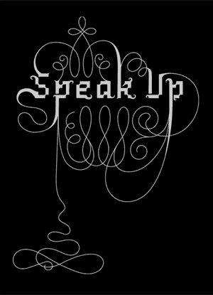
Speak Up T-Shirt Design (2003)
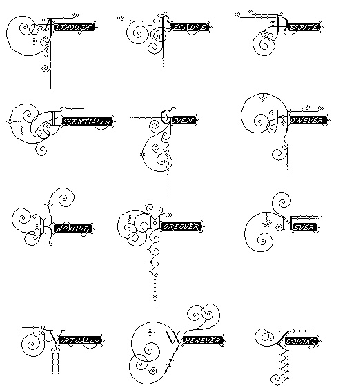
Pixilluminations: An Alphabet of thoughts - For Rick Valicenti & Thirst (2003)
The 2003 AIGA conference in her hometown of Vancouver was Bantjes first time attending a design conference. In an attempt to get noticed she bravely forced herself to speak to people and hand out a self-promotional piece of work, named ‘Poster One’.
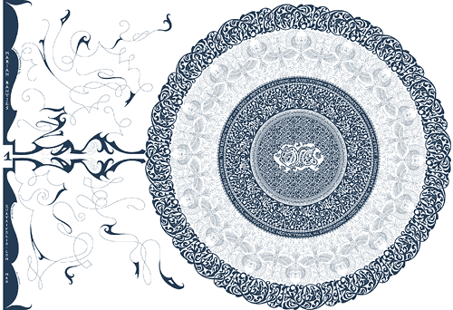
Poster One (2003)
* This was not her first attempt at the poster, as the first design had a diverse approach.
“Always be willing to abandon a lot of hard work and begin again if it isn’t working.”
- Marian Bantjes (2013). Pretty Pictures
Bantjes got a lot of praise and attention for this piece, and even met Stefan Sagmeister who had recognized the work she had sent him before!
The same year Bantjes was promoted to be an Author of Speak Up to give her own opinion on design instead of commenting on other members’ posts. This benefitted her, as she became more recognised across North America. Bantjes credits this opportunity as a “significant factor” in her success.
Despite becoming more recognised in the design world, Bantjes still wasn’t getting much work, and after living off her savings, she decided to take out a loan to buy more time. This paid off (excuse the pun) as she got her first paid assignment in August 2004! The job was for Details Magazine, they had seen her design for the Speak Up T-shirt competition and asked for a similar design. Although overjoyed to finally have work, as any free-lance designer would be, Bantjes was disappointed that the client basically wanted a copy of the T-shirt design, rather than giving her the preferred choice of creative control.
Shortly after, work began to pick up and Bantjes continued to make self-promotional pieces, taking advantage of contributing work to publications for ‘free printing’ opportunities.
An example is the typeface named ‘Restraint’ which originated from the idea of illustrating a poem, ‘Survival Kit’, she had written, in the form of a crossword.
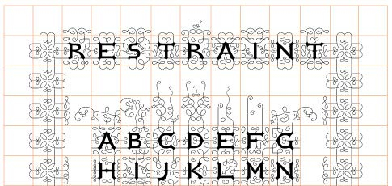
Restraint Typeface (2004) - Which won a Type Directors’ Club award in 2008
Restraining each letter to a square grid, she created a set of both horizontal and vertical connecting letters. Realising she needed variations of the ornamentations of letters in order to intersect words; she calculated this would mean she would have to create 10,140 characters. As that is crazy, she finally got the light blub idea of having one set of ornamented letters open at all sides, creating terminals that could be added when necessary.
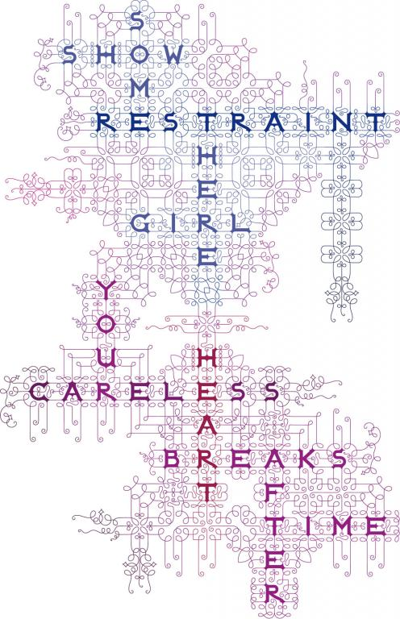
Restraint Typeface - The first time it had been called by its name in this piece
The lettering system was then used in a number of projects, including being turned into a font, used on her second business cards, a prototype for advertising a conference, ‘Bad Type’, at St Bridge Type Library in London and a poster competition for Speak Up.
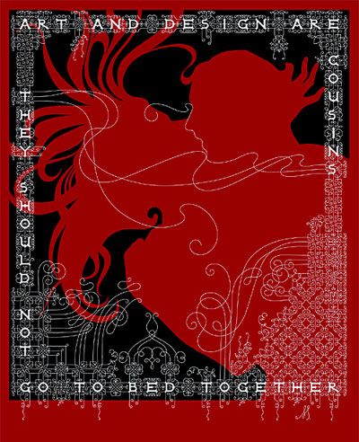
Speak Up Poster using the Restraint Typeface
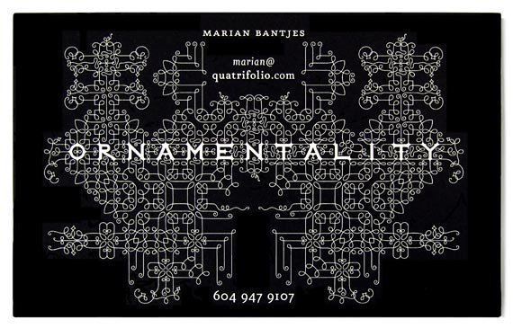
Bantjes Busniess Card using the Restraint Typeface
A huge opportunity for Bantjes happened in 2004, when Emily Carr University asked her to teach Typography as a new course. She designed the 13-session course within two weeks, including preparing herself with the background knowledge of the history of typography and its designers that she had not been taught herself. She used this course for many years, with only minor adjustments, turning students that knew nothing about typography into self-described ‘Type Nuts’.
In 2007 Bantjes was overwhelmed with invitation to speak at the AIGA conference in Denver, to then being accepted as an official member in 2008. Now recognised internationally, Bantjes has been invited to speak, and had her work featured in various publications worldwide including IDEA (Japan), Eye (UK), Azure (Canada), DPI (Taiwan), Concept (Indonesia), +81 (Japan), 2+3D (Poland), Form (Germany) and D2B (Brazil) to name a few. In addition, she has helped to judge for many prestigious awards including D&AD (UK), TDC (NY) and ADC (NY), had her work featured in a number of design exhibitions besides three of her own and published books with Thames & Hudson including ’I Wonder’ (2010) and ‘Pretty Pictures’ (2013).
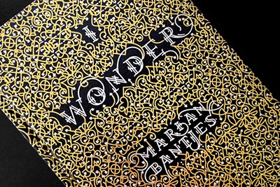
I Wonder by Marian Bantjes - Dedicated to her Mother
Two highlights of her success in 2010 include being awarded with an ‘Honorary Doctorate of Letters’ from the University she taught at, Emily Carr, and speaking at the TED Conference in Long Beach, California, which along with all her successes over the years, proved to Bantjes that her leap of faith into the unknown was a rewarding risk that shaped her into the highly reputable member of design she is today.
Wonderful Work
Marian Bantjes has worked for a number of clients over the years, every single one an inspirational masterpiece. It was extremely difficult to limit the choice of which projects to share, but here are just a few personal favourites:
2007
Want It!
Michael Bierut at Pentagram designing the new identity for ‘Saks Fifth Avenue’, asked Bantjes to work on the Saks campaign, ‘Want It!’ using the script from the logo and adding flourishes to give it ‘more swing’. Sketching a number of variations of concepts, Bantjes began to question whether she was the right person for the job and quit. However, the client came back to her and asked her to give it another try, finally finding a winner.
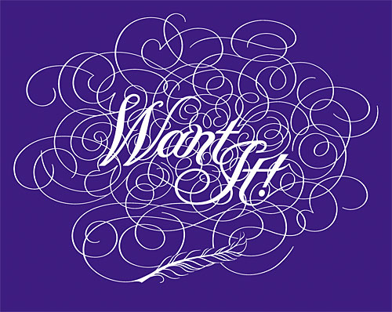
Want It Campaign: Saks Fifth Avenue Identity
Bantjes then had the task of designing the typography for the ‘18 trend items’ of the season, maintaining the feel of the design for ‘Want It!’. During sketching her concepts, Bierut called to tell her that Saks wanted the words to look like the things they were describing. A daunting task, but a challenge Bantjes was thrilled to venture.
The project involved creating a set of basic letterforms from which she could then customize the ascenders and descenders for each illustration. Bantjes explained how some were easy, and others a struggle, sketching numerous versions. However, the finished items look like they were worth the struggle:
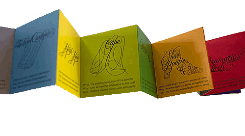
Want It Campaign: Trend Items Typography
The last component of the project was for the launch of the Saks’ eighth floor, dedicated to shoes:
Sugar
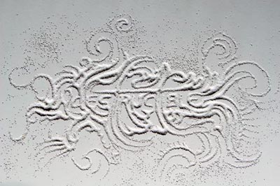
Indestructable : The sugar piece that caught Sagmeister's eye
Bantjes very first sugar piece, ‘Indestructible’, a personal project in 2006, became a significant factor to the evolution of her success. It gained recognition, thanks to Rick Valicenti, from being included in a sample-portfolio of Bantjes work using ‘Fox River Paper’, now known as ‘Neenah Paper’. Leading to her being commissioned by Stefan Sagmeister, who names her as “one of the most innovative typographers working today”, to contribute not once, but twice, to his series “Things I have learned in my life so far”. Six versions of phrases were created, one never used, each created without sketches or templates.
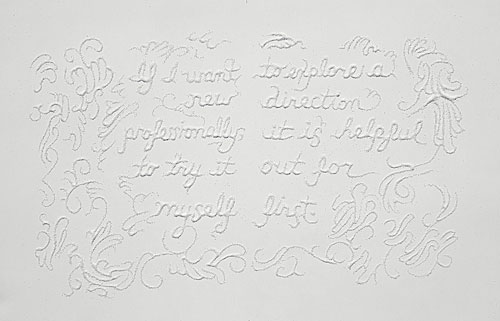
One of the sugar pieces for “Things I have learned in my life so far”
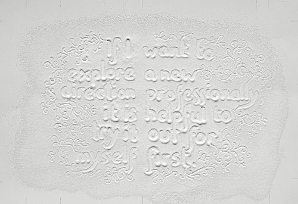
Sugar piece for “Things I have learned in my life so far” that was never used
All Purpose Jeans
Commissioned by Alessandro Tomassetti, owner of the clothing line ‘All Purpose’, to create elaborate designs to stitch onto the pockets of his jeans.
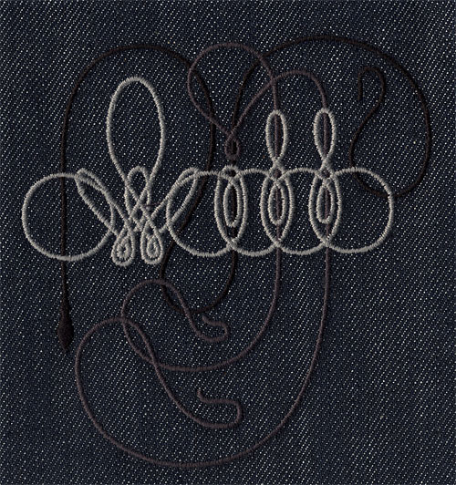
All Purpose Stitch Design
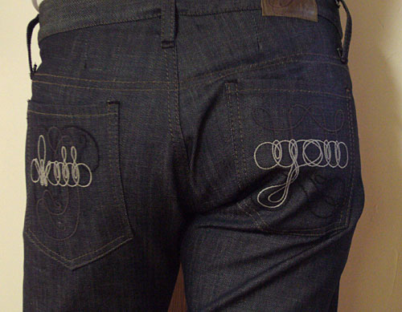
All Purpose Jeans : Pocket Design by Marian Bantjes
2008
Valentines '08
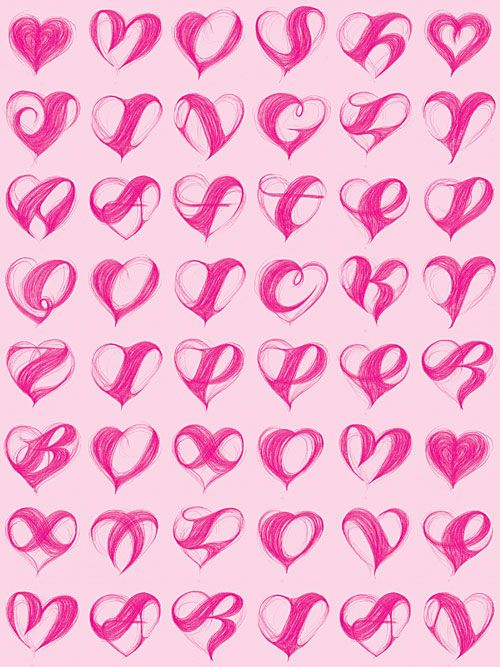
Bantjes created her own Alphabet using the shape of a heartSending personalised mail outs using the letterforms created to make names
Saks Heart
Commissioned by Terron Schaefer at Saks Fifth Avenue for their Valentines Day season, Bantjes original concept was something ‘loose and sexy’. Not fitting the vision she had, she switched direction to a more complex heart containing words of affection. Due to multiple situations of unauthorised usage, Bantjes made the decision to sell the rights of this piece to Saks for their lawyers to deal with.
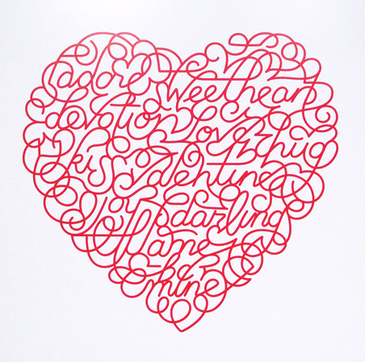
Saks Fifth Avenue Valentine Heart (2008)
The Saks Heart was used as a base for the design of Zeit Magazine’s section on love, where Bantjes repeated the word ‘liebe’ inside the shape of a heart in a similar way.
2009
“The 00s”
Asked to contribute to ‘New York Magazine’ for their ‘end of decade’ issue, Bantjes was asked along with many other designers to create a full-page illustration of the words “The 00s”. She dedicates the idea to her friend, Henrik Kubel, a designer, who inspired her during a conversation where he mentioned how when he was younger he used to cover his textbooks with tinfoil and draw on them.
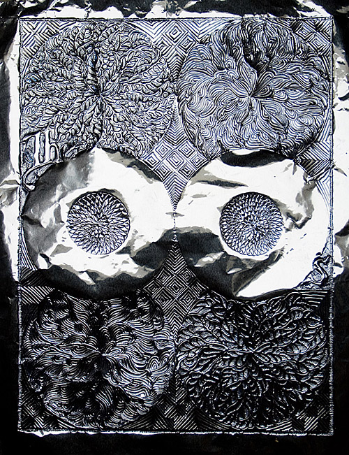
“The 00s” Illustration for New York Magazine
What made Bantjes passionate about the technique used was how the tinfoil allowed the piece to vary in colour, hue and reflection when in different environments. Unfortunately, the editorial ran over, resulting in many title pages being cut; including Bantjes. Therefore the design was only seen as a 1×1.5-inch thumbnail on the contents page.
2011
Valentines '11
As a tradition every year, this year Bantjes wanted something different. She took the fact that her Valentines designs were requested by many to buy (which she objects to), the nostalgia of her childhood and trip to Mexico to come up with the idea of creating a series of Valentines that could be shared with the friends of people she had sent them to.
The series was created by dividing a heart into six slices with two designs either side, which could then be mix and matched for different combinations. I love the abstract form and how they pop with colour!
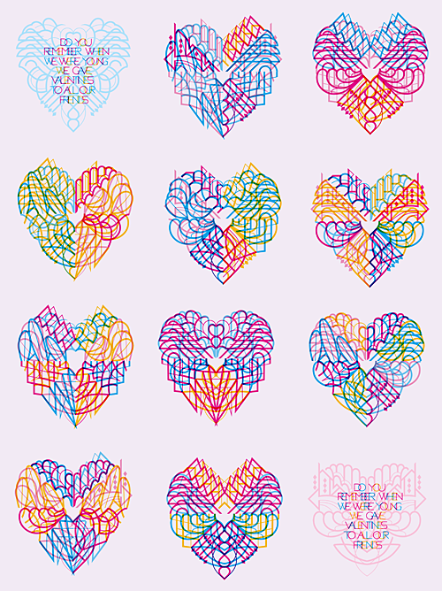
Valentines 2011 Designs by Marian Bantjes
End of an Era
The previously mentioned book, ‘Pretty Pictures’ written by Bantjes (2013), is a chronological celebration of her work that defines the ‘arc’ in her career and philosophy in design, drawing a line under past work to allow her to move on to new things. It is the book that helped me to write this essay, and I found it so inspiring and interesting I ended up buying it! It reminded me how easy it is to become absorbed with computers and technology, loosing our imagination and neglecting our ability to create with the tools that surround us everyday.
As a self-confessed ‘Type-Nut’, writing about Marian Bantjes has been a motivating and educating experience; oblivious of the impact she had in the design world. Her story is encouraging to young designers and shows that with ambition and perseverance, success will follow.
Bibliography
Eye Magazine | Feature | Reputations: Marian Bantjes. 2014. Eye Magazine | Feature | Reputations: Marian Bantjes. [ONLINE] Available at: www.eyemagazine.com.
Marian Bantjes (2013). Pretty Pictures. London: Thames & Hudson.
Communication Arts . 2014. Communication Arts . [ONLINE] Available at: www.commarts.com.
Narian bantjes. 2014. [ONLINE] Available at:designboom.com
Marian Bantjes (June 2010). Marian Bantjes: Intricate beauty by design [Video file]. Retrieved from: http://www.ted.com
New York Magazine (sortof) | Marian Bantjes. 2014. New York Magazine (sortof) | Marian Bantjes. [ONLINE] Available at: bantjes.com
Bio and Photo | Marian Bantjes. 2014. [ONLINE] Available at: bantjes.com
Amazing World of Marian Bantjes – Inspiration Bit. 2014 [ONLINE] Available at: inspirationbit.com
It's Nice That : Graphic Design: Stunning new Marian Bantjes monograph celebrates a decade of her inimitable work. 2014. [ONLINE] Available at: itsnicethat.com
Marian Bantjes: Beyond Pretty Pictures | Designers & Books. 2014. [ONLINE] Available at designersandbooks.com